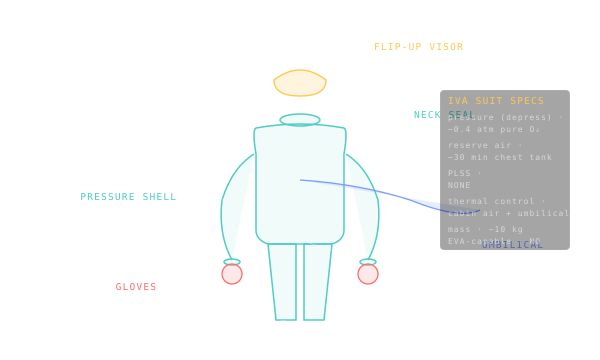
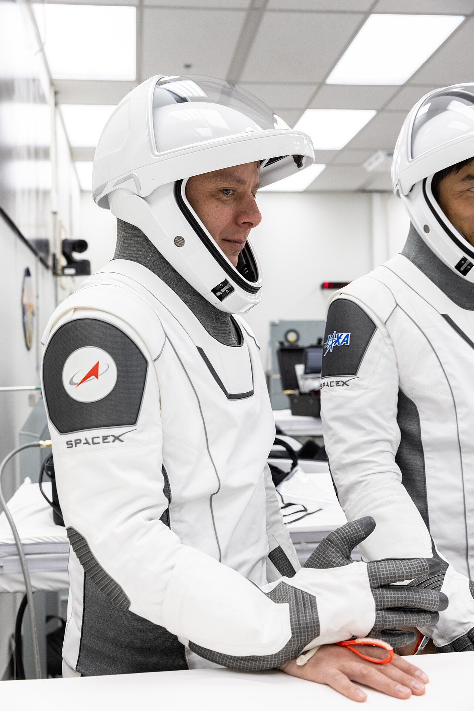

IVA pressure suits
The flight suit — worn inside the spacecraft during the high-risk minutes of launch, ascent abort, re-entry, and landing — is a pressure container with arms that buys the crew enough time to land if cabin pressure fails.

IVA (intra-vehicular activity) suits exist because of one accident. On 30 June 1971, Soyuz 11 returned from the world's first space-station mission with its three cosmonauts dead in their seats — a depressurisation valve had opened at 168 km altitude during separation, and the crew were in shirtsleeves with no suits to save them. The Soviet response was the Sokol KV-2: a soft pressure suit donned inside the descent module and worn for every Soyuz launch and return since 1973. The US followed a similar path after the Challenger and Columbia losses: shirtsleeve ascents on the Shuttle became unacceptable, and the Advanced Crew Escape Suit (ACES) was made mandatory. Every crewed spacecraft flying today has its own IVA suit.
An IVA suit is fundamentally a pressure container with arms. It is **not** designed for spacewalking — there is no life-support backpack, no thermal control to dump metabolic heat to space, no real mobility. The umbilical that snakes from the suit to the seat carries oxygen, communications, and biomedical telemetry; without that umbilical the suit has perhaps 30 minutes of survival air in a small chest reservoir. Cabin pressure is the primary life support; the suit is the **backup** that keeps the crew alive long enough to land if cabin pressure fails. In a depress event the suit inflates to 0.4 atm of pure oxygen — enough to breathe, enough to keep blood from boiling — while the spacecraft descends to where the parachutes can deploy and the crew can be recovered.
Each IVA suit follows the same envelope: pure O₂ at ~0.4 atm in depress, umbilical-fed during nominal flight, ~30 min survival reserve, no thermal control. Differences across programs are cosmetic and ergonomic — Sokol uses a back-entry seam; ACES and SpaceX use front entry; Crew Dragon and Starliner add touchscreen-compatible gloves. See /fleet for the family catalog: Sokol KV-2 (Russia), ACES (US Shuttle), SpaceX IVA Suit (Crew Dragon), Boeing Blue (Starliner), Shenzhou IVA Suit (China), and the next-generation Sokol-M.
